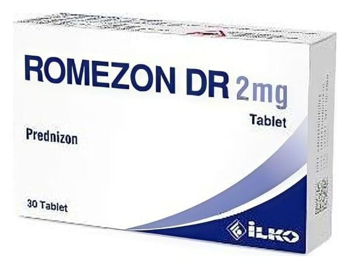

Romezon Dr 2 mg Tablet, 30 Adet

Ne için kullanılır
KT · Bölüm 1ROMEZON DR sarı renkli, yuvarlak, bikonveks, geciktirilmiş salım sağlayan tablettir. ROMEZON DR 30 tabletlik blister ambalajlarda kullanıma sunulmuştur. ROMEZON DR etkin madde olarak prednizon içeren ve geciktirilmiş salıma sahip bir kortikosteroid ilaçtır. Kortikosteroidler antienflamatuvar etkilere sahiptir. Antienflamatuvar ilaçlar, etkilenen eklemlerde ağrı, şişlik, sertlik, kızarıklık ve ateşi azaltır. ROMEZON DR şu hastalıkların tedavisinde kullanılır: • Uygun standart tedaviye yanıt vermeyen çocuklar ve yetişkinlerde alerjik hastalıklar; alerjik egzama, ilaca karşı gelişen aşırı duyarlılık durumları, saman nezlesi veya yıl boyu süren alerjik nezle, serum hastalığı, • Deri hastalıklarının tedavisinde: Egzama, ilaç reaksiyonları, alerjik hastalıklar, büllü hastalıklar gibi hekimin uygun gördüğü deri hastalıklarında, • Doğuştan böbrek üstü bezlerinin aşırı gelişerek büyümesi (konjenital adrenal hiperplazisi), kanserle beraber görülen kanda kalsiyum iyon düzeyinin anormal derecede yüksek olması (malign hiperkalsemi), vücutta cerahatli olmayan tiroid bezi
iltihapları (non-supresif tiroidit), böbrek üstü bezlerinin yetersiz çalışması sonucu vücutta hidrokortizon hormonu eksikliği (birincil ve ikincil adrenokortikal yetmezlik), • Kronik iltihabi bağırsak hastalığı (Crohn hastalığı) ve kalın bağırsakta iltihap yaralarının (ülseratif kolit) akut dönemleri, • Kırmızı kan hücrelerinde yıkımın artmasından kaynaklanan anemi (hemolitik anemi), ateş, iğne başı şeklinde kırmızı morarmalar, bilinç bulanıklığı, baş ağrısı ve trombositlerin sayısında azalma ile görülen hastalık (idiyopatik trombositopenik purpura), kan hücrelerinin ve lenf bezlerinin kanseri (lösemi ve lenfoma) ve multipl miyelom gibi hastalıkların tedavisinde tek başına veya diğer tedavi edici ajanlarla kombine olarak, • Otoimmun hastalıklarda (örn. Pnömokokkal menenjit, myastenia gravis, kronik enflamatuvar nöropati, vaskülit gibi) ve diğer nörolojik hastalıklarda, • Gözün farklı bölümlerinde gelişen şiddetli alerjik ve iltihaplı durumların tedavisinde: Bir gözde meydana gelen delici, yaralanma veya göz içi ameliyatını takiben her iki gözü de etkileyen iltihabi durumlar (sempatik oftalmi), topikal steroidlere (iltihap ve diğer bazı durumlarda kullanılan kortizonlu ilaçlar) cevap vermeyen gözün retina tabakasında ve gözde gelişen iltihabi hastalıklar, • Organ nakliyle ilişkili gelişen akut veya kronik solid organ reddi, • Çeşitli akciğer veya solunum hastalıklarının tedavisinde: Kronik obstrüktif (tıkayıcı) akciğer hastalıkları (KOAH), bronşiyal kanalda Aspergillus fumigatus mantarının üremesine bağlı olarak ortaya çıkan astım (alerjik bronkopulmoner aspergillozis), solunum yoluna mide içeriğinin kaçması sonucu gelişen akciğer iltihabı (aspirasyon pnömonisi), astım, akciğer tüberkülozun ortaya çıkması ve yayılması (uygun antitüberkülöz tedavisiyle birlikte kullanıldığında), hipersensitivite (aşırı duyarlılık) pnömonisi, hava yollarındaki bağ dokuları etkileyen bir hastalık (kriptojenik organize pnömoni), bağışıklık yanıtta yer alan eozinofil hücrelerinin akciğerde birikim gösterdiği hastalık (idiyopatik eozinofilik pnömoni), uygun anti-PCP (Pneumocystis carinii pnömonisi) antibiyotiklerle tedavi edilen bir HIV (+) bireyde (İnsan İmmün Yetmezlik Virüsü ile enfekte) ortaya çıkan Pneumocystis carinii’nin neden olduğu akciğer enfeksiyonu (Pneumocystis carinii pnömonisi), akciğerde nodül ve lezyonlarla gelişen ve belirti veren hastalık (semptomatik sarkoidoz), • Nedeni bilinmeyen veya lupus eritematozus nedeniyle idrar oluşumunun görülmediği böbrekten fazla miktarda protein atılmasıyla karakterize böbrek hastalığında (nefrotik sendromda) idrar söktürülmesinin uyarılması durumları veya idrarla protein atılımını azaltılmasında, • Akut gut artriti (ağrı, kızarıklık, şişlik ve hassasiyet ile karakterize, mikrobik olmayan bir eklem iltihabı) tedavisinde kısa süreli ek tedavi olarak; ankilozan spondilit (bel kemiği ile kalça kemiği arasındaki eklemin iltihaplanmasını ifade eden, kronik romatizmal bir hastalık), dermatomiyozit/polimiyozit (kas zayıflığı ve deri döküntüsü gibi belirtilerle kendini gösteren iltihaplı kas romatizması), romatizmal polimiyalji (kaslarda tutulmaya neden olan, kronik romatizmal bir hastalıktır), psöriazis (pembe- kırmızı hafif kabarmış cilt bölgesi üzerinde beyaz, kalın, parlak ve kuru kepekler gözlenmesi ile karakterize bir deri hastalığı) ve psoriatik artrit (eklem iltihaplanması) ile
karakterize kronik romatizmal bir hastalıktır), tekrarlayan polikondrit (kıkırdak ve bağ dokusunda iltihaplanma ve yıkıma neden olan ve ataklar halinde seyir gösteren, nadir görülen bir hastalık), jüvenil romatoid artrit (çocuklarda oluşan eklem iltihabı) dahil romatoid artrit, Sjogren sendromu (kuru göz ve kuru ağıza neden olan, bağışıklık sisteminin kendi kendine neden olduğu bir hastalık), sislemik lupus eritematoz (kelebek hastalığı olarak da bilinen, vücutta pek çok organı birden tutan romatizmal bir hastalık) ve vaskülit (hem atardamarları hem de toplardamarları etkileyebilen, damarların iltihabı ile ortaya çıkan hastalık) gibi seçili durumların kötüleşmesi esnasında veya sürdürme tedavisinde, • Sinir sistemi veya kalp tutulumu ile birlikte seyreden trişinoz (parazitlerin neden olduğu ağır ve öldürücü hastalıklar), beyin zarlarının tüberküloza bağlı iltihapları (tüberkülöz menenjit hastalığı) uygun antitüberküloz tedavisi ile birlikte. ROMEZON DR geciktirilmiş salıma sahip olduğu için tableti aldıktan yaklaşık 4 saat sonra ilacı salıverir.